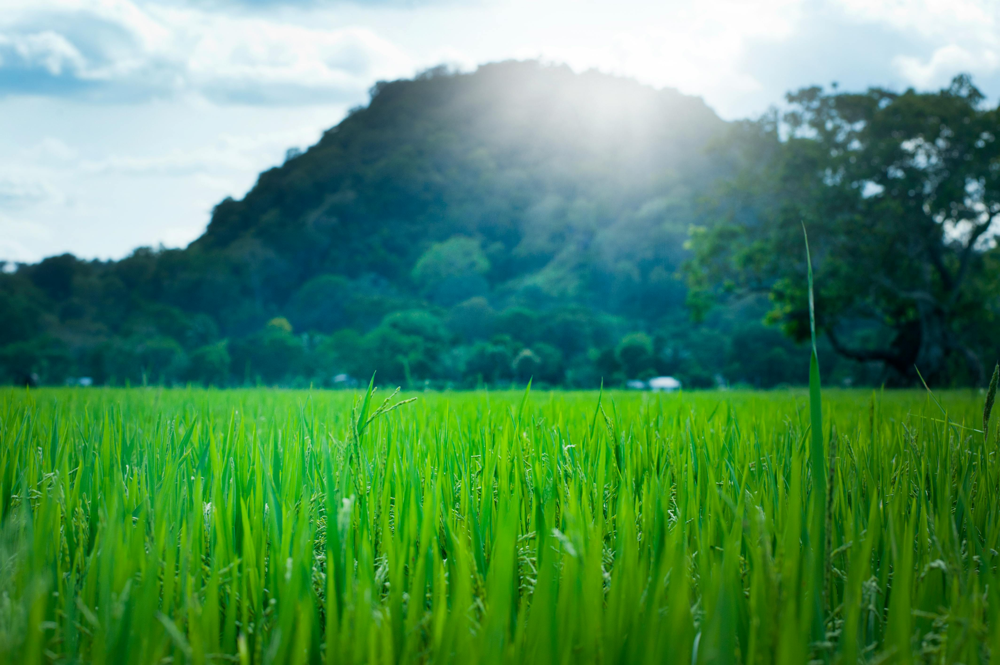
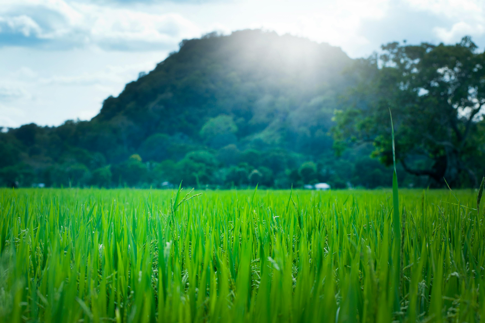

SRI LANKA
Island country in South Asia

Experience the vibrant culture and breathtaking landscapes of Sri Lanka.
Join our community and share your journey through the stunning vistas of this island paradise.
Start Your JourneyIsland country in South Asia
Experience the vibrant culture and breathtaking landscapes of Sri Lanka.
Join our community and share your journey through the stunning vistas of this island paradise.
Start Your JourneyDiscover the beauty of Sri Lanka through our curated image collection.

 

Your Gateway to Adventure
Immerse yourself in local traditions and explore hidden gems.
Breathtaking views from lush mountains to pristine beaches await you.
Delve into the rich history and vibrant culture of Sri Lanka.
“An unforgettable experience that captured the essence of Sri Lanka!”
Jane Doe, Travel Enthusiast
| Official Name | Democratic Socialist Republic of Sri Lanka | |
| Capital | Sri Jayawardenepura Kotte | (administrative), Colombo (commercial) |
| Area | 65,610 sq km | (25,332 sq miles) |
| Population | Approximately 22 million | (2023 estimate) |
| Languages | Sinhalese, Tamil, English | (link language) |
| Currency | Sri Lankan Rupee (LKR) | |
| Climate | Tropical (two monsoon seasons) May to September and December to February | |
| Major Religions | Buddhism | 70% |
| Hinduism | 12.6% | |
| Islam | 9.7% | |
| Christianity | 7.6% | |
| Independence Day | February 4,1948 | |
| Goverment Type | Unitary presidential constitutional Republic | |
| Major Industries | Textiles,Tea,Rubber,Tourism,agriculture,fisheries,software development | |
| UNESCO World Heritage Sites | 8 sites Including Ancient City of Sigiriya, Sacred City of Kandy, Old Town of Galle | |
| Natural Resources | Gemstones, graphite, mineral sands | Limestone, clay, hydropower |
| Cultural Festivals | Vesak, Sinhala and Tamil New Year, Christmas | |